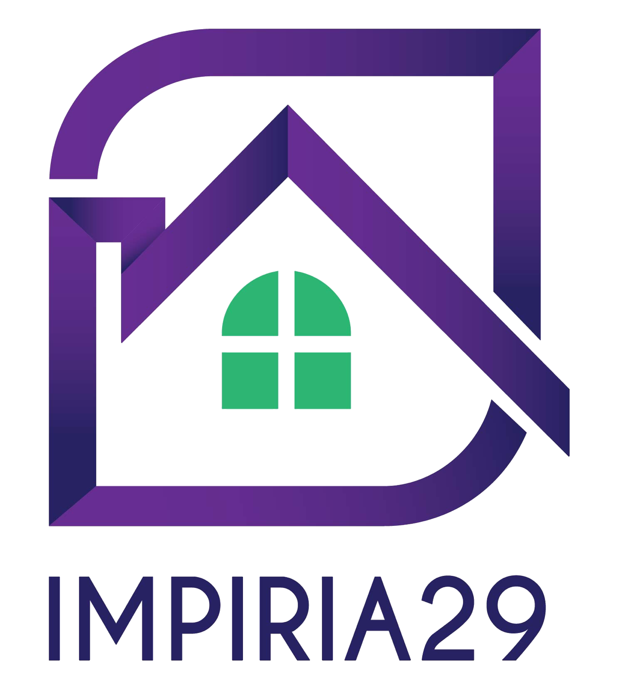

SG. KLANG DI KG. LOMBONGSungai Klang · Klang
Memuatkan bacaan…Komuniti / Ringkasan

Selamat datang, Penduduk 👋
Komuniti yang lebih erat.
Ini yang sedang berlaku di Taman Anggerik Permai 1 (Impiria29).
PERSATUAN PENDUDUK JALAN LOMBONG TIMAH 29/39, SHAH ALAM, SELANGOR PPM-016-10-15112018
SEKILAS PANDANG
Komuniti anda hari ini
Waktu solat setempat
Tarikh Hijrah sedang dimuatkan…
Jadual JAKIM · zon SGR01
Cuaca 3 hari
Memuatkan cuaca…
IPU semasaMemuatkan…Mengambil bacaan Johan Setia · MCAQM001…
Acara akan datang
0 acara
Seterusnya: —
Baki Tabung Taman
RM 0
Tekan untuk maklumat akaun taman
SHAH ALAM · SEKSYEN 29
Maklumat penting untuk komuniti
TANDA KALENDAR ANDA
Acara seterusnya
RINGKASAN KEWANGAN TAMAN
Baki Tabung Taman
Jumlah baki semasa dan panduan bayaran bulanan.
Jika anda ingin membuat bayaran bulanan, seperti yang dipersetujui pada AGM yang lepas, bayaran bulanan berjumlah RM30 setiap rumah. Buat bayaran secara manual menggunakan maklumat akaun persatuan di bawah, kemudian maklumkan kepada Bendahari.
Untuk semakan lain, sila berhubung dengan Bendahari semasa.
RHB
AKAUN PERSATUAN
RHB Bank Berhad
Nombor akaun taman26260700005908
Makluman pembayaran
Buat masa ini, bayaran terus melalui laman ini belum tersedia. Sila buat bayaran secara manual dan maklumkan kepada Bendahari selepas pembayaran.
JADUAL JAKIM · SHAH ALAM
Waktu solat bulanan
Jadual zon solat komuniti untuk bulan yang dipilih.
Jadual waktu solatZon JAKIM SGR01Tarikh Hijrah hari ini sedang dimuatkan…
Pilih bulan untuk memuatkan jadual.
Sumber jadual: e-Solat JAKIM melalui open data jadual waktu solat. Sahkan dengan pengumuman rasmi pihak berkuasa agama setempat jika terdapat perubahan.
RAMALAN CUACA · SHAH ALAM
Cuaca Taman Anggerik Permai 1
Ramalan sehingga 16 hari dan tinjauan bulanan untuk membantu merancang aktiviti taman.
KEADAAN SEKARANG
Memuatkan cuaca…
Taman Anggerik Permai 1, Seksyen 29, Shah Alam
Rasa seperti—
Kelembapan—
Angin—
Hujan sekarang—
Sumber: Open-Meteo
PERANCANGAN AKTIVITI
Ramalan 16 hari
Memuatkan ramalan…
PERANCANGAN BULANAN
Tinjauan cuaca bulanan MET Malaysia
Ramalan harian terperinci tersedia sehingga 16 hari. Untuk gambaran hujan bagi bulan ini, rujuk tinjauan bulanan rasmi MET Malaysia.
Ramalan harian daripada Open-Meteo. Bacaan IPU menggunakan stesen pemantauan JAS/APIMS dan mungkin tidak tepat sama dengan keadaan di rumah anda.
RUJUKAN KOMUNITI
Info setempat
Pautan rasmi dan maklumat berguna untuk penduduk Taman Anggerik Permai 1, Seksyen 29.
PEMANTAUAN BANJIR · KLANG
Aras sungai · SG. KLANG DI KG. LOMBONG
Bacaan semasa dan carta aras air stesen SG. KLANG DI KG. LOMBONG dipaparkan di sini daripada Public InfoBanjir JPS.
Cara baca tahap ambangWaspada: aras mula meningkat · Amaran: menghampiri aras banjir · Bahaya: boleh melimpah. Ambang berbeza mengikut stesen.
Bacaan aras air terkini dan carta stesen JPS.
Bacaan aras air terus daripada JPS
Paparan carta JPS tidak membenarkan pembenaman dalam aplikasi. Ringkasan bacaan akan muncul di atas apabila sumber data JPS boleh dicapai.
Buka sumber rasmi JPS ↗JPS MALAYSIA
Hujan semasa
Data taburan hujan stesen di Selangor, termasuk bacaan harian dan hujan sejak tengah malam.
Semak bacaan hujan ↗MET MALAYSIA
Cuaca dan amaran
Semak amaran hujan berterusan, ribut petir dan angin kencang sebelum aktiviti luar.
Laman MET Malaysia ↗JAS / APIMS
Kualiti udara
Semak IPU Malaysia dan stesen pemantauan kualiti udara.
Buka bacaan IPU ↗MAJLIS BANDARAYA SHAH ALAM
Perkhidmatan MBSA
Portal rasmi untuk pengumuman dan perkhidmatan bandar raya Shah Alam.
Portal MBSA ↗BANTUAN DAN KECEMASAN
Simpan nombor penting
Jika berlaku kecemasan yang mengancam nyawa, hubungi talian kecemasan 999. Untuk pertanyaan berkaitan banjir, Bilik Gerakan Banjir JPS Negeri Selangor boleh dihubungi pada waktu pejabat.
☎ 999 · Kecemasan☎ JPS Selangor · 03-5544 7376Sambungan 7378 / 7010 · waktu pejabat sahajaHubungi persatuan: impiria29@gmail.com
Maklumat ini membantu penduduk mendapatkan sumber rasmi. Ikuti arahan pihak berkuasa dan semak masa kemas kini setiap bacaan.
PAPAN KOMUNITI
Pengumuman
Berita dan makluman untuk semua jiran.
AKTIVITI KEJIRANAN
Acara & AGM
Rancang, sertai dan catat kehadiran komuniti.
Komuniti aktif, hubungan erat.
Acara seterusnya pada minggu ini
KALENDAR KOMUNITI
Acara akan datang
DIREKTORI PENDUDUK
Direktori Rumah
Pilih nombor rumah untuk lihat atau kemas kini maklumat isi rumah.
0Maklumat dikemas kini
0Belum dikemas kini
0Tidak berpenghuni
TAMAN ANGGERIK PERMAI 1
Direktori rumah
Dikemas kiniBelum kemas kiniTidak berpenghuni★Rumah AJK semasa
Tekan mana-mana nombor rumah untuk lihat butiran.
PERSATUAN PENDUDUK
AJK Semasa
Kenali barisan jawatankuasa Taman Anggerik Permai 1 (Impiria29).
PENGGAL SEMASA2026 – 20280 ahli jawatankuasa
IMPIRIA29KEPIMPINAN KOMUNITI
Carta organisasi
TAMAN ANGGERIK PERMAI 1Impiria29 · Carta organisasi
Mula sesi baharu selepas AGM untuk mengarkibkan senarai ini dan mengemas kini tanda rumah AJK.
RUJUKAN PERSATUAN
Arkib AJK terdahulu
KHABAR KOMUNITI
Hebahan penduduk
Kongsi berita keluarga atau minta bantuan daripada jiran dan AJK.
URUSAN PERSATUAN
Kewangan
Rekod yang jelas untuk komuniti yang yakin.
Baki semasa
RM 0Jumlah kutipan ditolak perbelanjaanRM
Jumlah pendapatan↙
RM 0Jumlah semua kutipanJumlah perbelanjaan↗
RM 0Jumlah semua perbelanjaanLAPORAN KEWANGAN
Graf mengikut jenis transaksi
Graf pendapatan dan perbelanjaan dipisahkan mengikut kategori. Pilih tempoh laporan untuk menapis dan eksport.
Pendapatan
Perbelanjaan
REKOD KEWANGAN
Transaksi terkini
| TRANSAKSI | KATEGORI | TARIKH | JENIS | JUMLAH |
|---|
RUANG PERIBADI KELUARGA
Family tree saya
Rekodkan nama, tarikh lahir dan hubungan setiap ahli keluarga.
Keluarga dipautkan
0
Jumlah ahli keluarga
0
SUARA KOMUNITI
Undian & Polls
Dapatkan pandangan penduduk dan lihat keputusan bersama.
PUSAT PENTADBIR
Log perubahan
Jejak rekod dan tindakan yang berlaku dalam aplikasi.
JUMLAH REKOD0